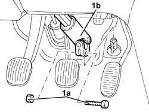
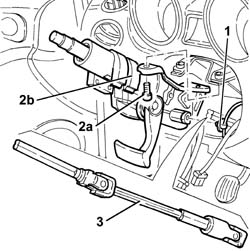

4110A30 Steering control shaft SUPPORT - R.R.
- Path
- Procedures > 41 STEERING > 4110 STEERING CONTROL AND LINKAGE > 4110A steering control > 4110A30 Steering control shaft SUPPORT - R.R.
- Kind
- repair procedure (removal / refitting; the operation number is the code)
- Applies to
- all engines; all production periods
- Interactive page
- https://sloeber94.github.io/elrnDB-a156/en/#/3238123
Applies to: all engines; all production periods
 Removing
Removing
 Refitting
Refitting4110A11 steering wheel - r+r for replacement or check for versions with air bag
7040A26 steering column trim - r+r
5550A12 complete stalk unit - r+r for versions with air bag
5520A12 ignition switch assembly - r r for versions with air bag
1. Unscrew bolt (1a) and disconnect steering control lower shaf (1b) from power steering case.

Applies to: all engines; all production periods
1. Remove wiring cable fasteners.
2. Unscrew screws (2a) and remove mount with steering control shafts (2b).
3. Extract steering control lower shaft.

Applies to: all engines; all production periods
Refitting
RemovingPlace steering control lower shaft back in its seating.
Place back in its seating mount with steering control shafts and fix it with its screws.
Place wiring cable fasteners back in their seatings.
Connect steering control lower shaft to power steering case and fix it with its bolt to torque.
 | Fastening | Component | Ø | Value (daNm) |
|---|---|---|---|---|
- | Bolt | STEERING SHAFT JOINTS | M8 | 1.9 - 2.1 |
5520A12 ignition switch assembly - r r for versions with air bag
5550A12 complete stalk unit - r+r for versions with air bag
7040A26 steering column trim - r+r
4110A11 steering wheel - r+r for replacement or check for versions with air bag
Topics linked from this page (5)
- 4110A11 steering wheel - r+r for replacement or check for versions with air bag
- 5520A12 ignition switch assembly - r r for versions with air bag
- 5550A12 complete stalk unit - r+r for versions with air bag
- 5580C18 air bag module - r+r
- 7040A26 steering column trim - r+r
Topics that link to this page (7)
- H10 STEERING HARD / (STEERING IN BOTH DIRECTIONS)
- H20 STEERING WHEEL OSCILLATIONS/ VIBRATIONS / WHILST DRIVING
- H21 STEERING WHEEL OSCILLATIONS/ VIBRATIONS / WITH THE VEHICLE STATIONARY
- S36 NOISE ' POWER ASSISTED STEERING / WITH THE STEERING WHEEL STATIONARY
- S45 NOISE' FRONT / ROUND BENDS
- 3330B42 pedal unit mount - r rfor right hand drive versions
- 3330D03 brake servo/pump assembly - r r for right-hand drive versions